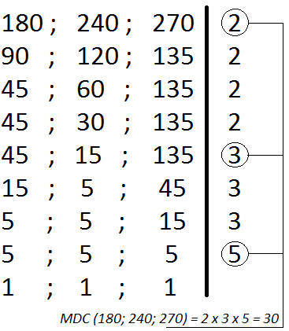

O máximo divisor comum (MDC) entre os dois números naturais é obtido a partir da intersecção dos divisores naturais, escolhendo-se o maior. O MDC pode ser calculado pelo produto dos fatores primos que são comuns tomando-se sempre o de menor expoente. O MDC também pode ser calculado pela decomposição simultânea em fatores primos, tomando apenas os fatores que dividem simultaneamente.
A decomposição simultânea ou fatoração simultânea consiste em dividir varias vezes os números dados pelo menor fator primo, se o número não for divisível pelo menor fator, ele deve ser repetido. O MDC é obtido pela multiplicação dos fatores primos comuns, ou seja, os fatores que dividem os números dados ao mesmo tempo.
Encontre o máximo divisor comum dos números 180, 240 e 270. Pela decomposição simultânea devemos dividir simultaneamente os três números dados começando pelo menor número primo possível até chegar ao resto 1.
O que fizemos foi dividir os números dados pelo menor primo, o número 2. Dividimos o três números. Depois verificamos se ainda é possível continuar dividindo pelo 2, sim. Os números que não puderem ser divididos devem ser repetidos, como o 135. Seguimos dividindo pelo 2. Quando não for mais possível dividi-los pelo 2, procuramos o menor número primo possível que possamos dividir pelo menos um deles, neste caso o número primo 3 pode dividir 45, 15 e 135. Seguimos dividindo pelo 3, quando possível, e conservando aqueles que não podem. Por fim, somente o número 5, que também é primo, pode dividir o número 5, resto das divisões anteriores. Esse processo acaba quando encontramos resto 1 para todos os números dados. O MDC é a multiplicação dos números primos que puderam dividir todos os números dados ao mesmo tempo. Portanto, o MDC (180; 240; 270) = 2 x 3 x 5 = 30.
Dois ou mais números sempre têm múltiplos comuns a eles. Vamos achar os múltiplos comuns de 4 e 6:
Múltiplos de 6: 0, 6, 12, 18, 24, 30,...
Múltiplos de 4: 0, 4, 8, 12, 16, 20, 24,...
Múltiplos comuns de 4 e 6: 0, 12, 24,...
Dentre estes múltiplos, diferentes de zero, 12 é o menor deles. Chamamos o 12 de mínimo múltiplo comum de 4 e 6.
Podemos calcular o m.m.c. de dois ou mais números utilizando a fatoração. Acompanhe o cálculo do m.m.c. de 12 e 30:
1º) decompomos os números em fatores primos;
2º) o m.m.c. é o produto dos fatores primos comuns e não-comuns.
O m.m.c. de dois ou mais números, quando fatorados, é o produto dos fatores comuns e não-comuns a eles,
cada um elevado ao maior expoente.
Neste processo, decompomos todos os números ao mesmo tempo, em um dispositivo como mostra a figura abaixo. O produto dos fatores primos que obtemos nessa decomposição é o m.m.c. desses números. A seguir vemos o cálculo do m.m.c.(15,24,60).
Portanto, m.m.c.(15,24,60) = 2 x 2 x 2 x 3 x 5 = 120
Entre os números 3, 6 e 30, o número 30 é múltiplo dos outros dois. Neste caso, 30 é o m.m.c.(3,6,30).
Observe:
m.m.c.(3,6,30) = 2 x 3 x 5 = 30
Dados dois ou mais números, se um deles é múltiplo de todos os outros, então ele é o m.m.c. dos números dados.
Considere os números 4 e 15, que são primos entre si. O m.m.c.(4,15) é igual a 60, que é o produto de 4 por 15. Observe:
m.m.c.(4,15) = 2 x 2 x 3 x 5 = 60
Dados dois números primos entre si, o m.m.c. deles é o produto desses números.